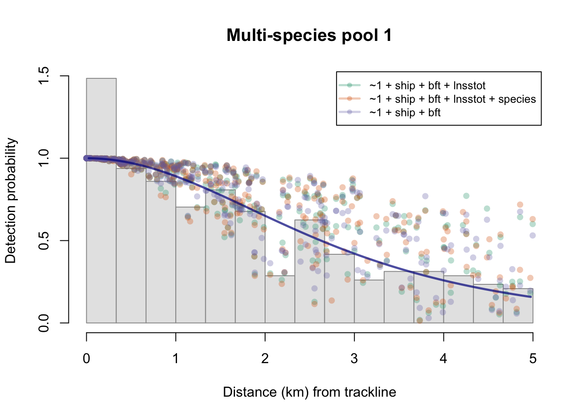

16 Validation
To validate these LTabundR functions, we can compare its output to that of ABUND9, written by Jay Barlow (NOAA Fisheries). First, we bring in the ABUND9 output files for the same DAS data:
# Local paths to these files
SIGHTS <- read.csv('data/SIGHTS.csv')
EFFORT <- read.csv('data/EFFORT.csv')You may download these files here: SIGHTS.csv and EFFORT.csv.
Sightings
Pivot and format the ABUND SIGHTS data…
abund <-
SIGHTS %>%
tidyr::pivot_longer(cols = 31:101,
names_to = 'species',
values_to = 'best') %>%
filter(best > 0) %>%
mutate(Region = gsub(' ','',Region)) %>%
mutate(DateTime = paste0(Yr,'-',Mo,'-',Da,' ',Hr,':',Min))…then summarize counts of species within each cruise:
abund_summ <-
abund %>%
group_by(cruise = CruzNo, species) %>%
summarize(ntot_abund = n(),
nsys_abund = length(which(! Region %in% c('NONE',
'Off-Transect') &
EffortSeg > 0))) %>%
mutate(species = gsub('SP','',species))Then do the same for LTabundR output:
ltabundr <-
cruz$cohorts$all$sightings %>%
# Filter out species that ABUND ignored based on its INP file
filter(!species %in% c('CU', 'PU'))
ltabundr_summ <-
ltabundr %>%
filter(OnEffort == TRUE) %>%
group_by(cruise = Cruise, species) %>%
summarize(ntot_ltabundr = n(),
nsys_ltabundr = length(which(included == TRUE &
EffType %in% c('S','F'))))Now join these two datasets by cruise and species code:
mr <- full_join(abund_summ, ltabundr_summ, by=c('cruise', 'species'))
mr %>% head
## # A tibble: 6 × 6
## # Groups: cruise [1]
## cruise species ntot_abund nsys_abund ntot_ltabundr nsys_ltabundr
## <dbl> <chr> <int> <int> <int> <int>
## 1 901 002 3 2 3 2
## 2 901 013 4 4 4 4
## 3 901 015 2 1 2 1
## 4 901 018 2 1 2 1
## 5 901 031 1 1 1 1
## 6 901 032 2 0 2 0Compare the total On-Effort sightings in both outputs:
Compare total sightings valid for use in density estimation (EffType "S" or "F" only, as well as other criteria such as Bft 0 - 6):
Let’s find the rows with discrepancies in sighting counts:
bads <- which(mr$nsys_abund != mr$nsys_ltabundr |
mr$ntot_abund != mr$ntot_ltabundr |
is.na(mr$ntot_abund) |
is.na(mr$ntot_ltabundr) |
is.na(mr$nsys_abund) |
is.na(mr$nsys_ltabundr))
bads %>% length
## [1] 5Let’s look at those rows in the joined dataframe:
mr[bads, ]
## # A tibble: 5 × 6
## # Groups: cruise [4]
## cruise species ntot_abund nsys_abund ntot_ltabundr nsys_ltabundr
## <dbl> <chr> <int> <int> <int> <int>
## 1 1203 015 1 0 2 0
## 2 1203 049 1 1 2 1
## 3 1621 073 5 4 5 3
## 4 1165 047 NA NA 1 1
## 5 1631 003 NA NA 1 0To investigate these 5 discrepancies, we will write a helper function that returns sightings details from both outputs for a given cruise-species:
sight_compare <- function(abund, ltabundr, cruise, spp){
message('ABUND:')
abund %>%
filter(CruzNo == cruise, species == paste0('SP',spp)) %>%
select(5, 34, 26, 29, 33, 3) %>%
mutate(use_sit = EffortSeg != 0) %>%
select(-EffortSeg) %>%
arrange(desc(use_sit)) %>%
print
abund %>%
filter(CruzNo == 1631) %>% pull(species) %>% table
message('\nLTabundR:')
ltabundr %>%
filter(Cruise == cruise, species == spp) %>%
select(6, 2, 13, 74, 70, 5, 9, 40, 87) %>%
rename(use_sit = included, use_effort = use) %>%
arrange(desc(use_effort)) %>%
tibble %>% print
}Discrepancies
Cruise 1203, Species 015
In this case, LTabundR has a non-systematic sighting that ABUND has ignored.
sight_compare(abund, ltabundr, 1203, '015')
## ABUND:
## # A tibble: 1 × 6
## CruzNo DateTime Beauf Mixed best use_sit
## <int> <chr> <int> <chr> <dbl> <lgl>
## 1 1203 2012-5-16 11:58 4 " F" 74.9 TRUE
##
## LTabundR:
## # A tibble: 2 × 9
## Cruise DateTime Bft mixed best OnEffort EffType use_effort
## <dbl> <dttm> <dbl> <lgl> <dbl> <lgl> <chr> <lgl>
## 1 1203 2012-05-13 13:19:44 5 TRUE 1 TRUE N TRUE
## 2 1203 2012-05-16 11:58:30 4 FALSE 74.9 TRUE N TRUE
## # ℹ 1 more variable: use_sit <lgl>Looking at the sighting details from LTabundR …
(ltabundr %>% filter(Cruise == 1203, species == '015'))[1,]
## Event DateTime Lat Lon OnEffort Cruise Mode
## SpPerc260 S 2012-05-13 13:19:44 11.96733 -161.1727 TRUE 1203 C
## OffsetGMT EffType ESWsides Course SpdKt Bft SwellHght WindSpdKt
## SpPerc260 -10 N 2 18 9.2 5 6 21
## RainFog HorizSun VertSun Glare Vis ObsL Rec ObsR ObsInd EffortDot
## SpPerc260 5 12 12 FALSE 6 073 235 280 <NA> TRUE
## EventNum file_das line_num stratum_HI_EEZ
## SpPerc260 268 CenPac1986-2020_Final_alb_edited.das 493027 FALSE
## stratum_OtherCNP stratum_WHICEAS year month day yday km_int km_cum
## SpPerc260 TRUE FALSE 2012 5 13 134 0 171168.7
## ship stratum use eff_bloc seg_id SightNo Subgroup SightNoDaily Obs
## SpPerc260 OES OtherCNP TRUE 34-0 981 069 <NA> 20120513_20 235
## ObsStd Bearing Reticle DistNm Cue Method Photos Birds CalibSchool
## SpPerc260 TRUE 90 NA 0.1 3 1 Y Y N
## PhotosAerial Biopsy CourseSchool TurtleSp TurtleGs TurtleJFR
## SpPerc260 N N NA <NA> NA <NA>
## TurtleAge TurtleCapt PinnipedSp PinnipedGs BoatType BoatGs PerpDistKm
## SpPerc260 <NA> <NA> <NA> NA <NA> NA 0.1852
## species best low high prob mixed ss_tot lnsstot ss_percent n_sp
## SpPerc260 015 1 NaN NaN FALSE TRUE 6.956522 1.93968 NaN 2
## n_obs n_best n_low n_high calibr ss_valid mixed_max spp_max included
## SpPerc260 1 1 1 1 TRUE FALSE FALSE <NA> TRUEAccording to ABUND, this sighting is not mixed-species, but LTabundR says it is. Looking at the raw DAS…
das_file <- 'data/surveys/CenPac1986-2020_Final_alb.das'
das <- das_readtext(das_file)
i <- which(substr(das$das, 6, 18) == '131944 051312')
das$das[i]
## [1] "268S.131944 051312 N11:58.04 W161:10.36 069 235 3 1 090 0.10 N N N"
## [2] "269A.131944 051312 N11:58.04 W161:10.36 069 Y Y 033 015 "
## [3] "269C.131944 051312 N11:58.04 W161:10.36 Overall estimate for full group- never saw all at once. -EMO"
## [4] "268G.131944 051312 N11:58.04 W161:10.36 069 A 235 1 090 0.10 "
## [5] "269A.131944 051312 N11:58.04 W161:10.36 069 Y Y 033 015"
## [6] "269C.131944 051312 N11:58.04 W161:10.36 begin PC protool, first sighting is subgroup 'A', acoustics already tracking "
## [7] "269C.131944 051312 N11:58.04 W161:10.36 photos taken during sighting indicate Steno (015) present. Not seen or estimated during sighting. -EMO"We see that this was a sighting of false killer whales during which species 015 was picked up during photo-ID. In the absence of a percent composition estimate for this sighting, it was ignored by ABUND.
Cruise 1203, Species 049
In this case, LTabundR has a non-systematic sighting that ABUND has ignored.
sight_compare(abund, ltabundr, 1203, '049')
## ABUND:
## # A tibble: 1 × 6
## CruzNo DateTime Beauf Mixed best use_sit
## <int> <chr> <int> <chr> <dbl> <lgl>
## 1 1203 2012-5-3 14:21 6 " F" 1.16 TRUE
##
## LTabundR:
## # A tibble: 2 × 9
## Cruise DateTime Bft mixed best OnEffort EffType use_effort
## <dbl> <dttm> <dbl> <lgl> <dbl> <lgl> <chr> <lgl>
## 1 1203 2012-05-03 14:21:40 6 FALSE 1.16 TRUE S TRUE
## 2 1203 2012-05-07 10:54:09 7 FALSE 1 TRUE N TRUE
## # ℹ 1 more variable: use_sit <lgl>Looking at the sighting details from LTabundR …
(ltabundr %>% filter(Cruise == 1203, species == '049'))[2,]
## Event DateTime Lat Lon OnEffort Cruise Mode
## SpPerc1614 S 2012-05-07 10:54:09 5.960333 -162.1255 TRUE 1203 C
## OffsetGMT EffType ESWsides Course SpdKt Bft SwellHght WindSpdKt
## SpPerc1614 -10 N 2 269 8.8 7 9 30
## RainFog HorizSun VertSun Glare Vis ObsL Rec ObsR ObsInd EffortDot
## SpPerc1614 5 5 1 FALSE 4.5 238 328 073 <NA> TRUE
## EventNum file_das line_num
## SpPerc1614 145 CenPac1986-2020_Final_alb_edited.das 489960
## stratum_HI_EEZ stratum_OtherCNP stratum_WHICEAS year month day yday
## SpPerc1614 FALSE TRUE FALSE 2012 5 7 128
## km_int km_cum ship stratum use eff_bloc seg_id SightNo Subgroup
## SpPerc1614 0 170067.7 OES OtherCNP TRUE 33-0 972 052 <NA>
## SightNoDaily Obs ObsStd Bearing Reticle DistNm Cue Method Photos
## SpPerc1614 20120507_9 238 TRUE 310 10 0.52 3 4 N
## Birds CalibSchool PhotosAerial Biopsy CourseSchool TurtleSp TurtleGs
## SpPerc1614 N N N N NA <NA> NA
## TurtleJFR TurtleAge TurtleCapt PinnipedSp PinnipedGs BoatType BoatGs
## SpPerc1614 <NA> <NA> <NA> <NA> NA <NA> NA
## PerpDistKm species best low high prob mixed ss_tot lnsstot
## SpPerc1614 0.7377314 049 1 1 1 FALSE FALSE 1 0
## ss_percent n_sp n_obs n_best n_low n_high calibr ss_valid mixed_max
## SpPerc1614 1 1 1 1 1 1 TRUE TRUE TRUE
## spp_max included
## SpPerc1614 049 TRUEThis is a sighting of a single Ziphiid whale. It appears to be within the geostratum:
Loooking at the raw DAS data …
i <- which(substr(das$das, 6, 18) == '105409 050712')
das$das[(i[1] - 10):(i[1] + 3)]
## [1] "135V.104143 050712 N05:57.61 W162:05.66 7 09 070 30.0"
## [2] "136N.104143 050712 N05:57.61 W162:05.66 272 09.3"
## [3] "137W.104143 050712 N05:57.61 W162:05.66 5 05 01 050 4.5"
## [4] "138*.104234 050712 N05:57.62 W162:05.79"
## [5] "139*.104434 050712 N05:57.62 W162:06.09"
## [6] "140*.104634 050712 N05:57.63 W162:06.39"
## [7] "141N.104713 050712 N05:57.63 W162:06.49 269 08.8"
## [8] "142*.104834 050712 N05:57.63 W162:06.69"
## [9] "143*.105034 050712 N05:57.63 W162:06.99"
## [10] "144*.105234 050712 N05:57.63 W162:07.29"
## [11] "145S.105409 050712 N05:57.62 W162:07.53 052 238 3 4 310 10.0 0.52 N N N"
## [12] "146A.105409 050712 N05:57.62 W162:07.53 052 N N 049 "
## [13] " 1 238 1 1 1 100"
## [14] "147*.105434 050712 N05:57.62 W162:07.59"It is not clear why ABUND did not include this sighting as non-systematic. Perhaps the ABUND geostratum calculations placed this sighting outside of the study area.
Cruise 1165, Species 047
In this case, LTabundR has a systematic sighting of a pygmy sperm whale that ABUND has ignored.
sight_compare(abund, ltabundr, 1165, '047')
## ABUND:
## # A tibble: 0 × 6
## # ℹ 6 variables: CruzNo <int>, DateTime <chr>, Beauf <int>, Mixed <chr>,
## # best <dbl>, use_sit <lgl>
##
## LTabundR:
## # A tibble: 1 × 9
## Cruise DateTime Bft mixed best OnEffort EffType use_effort
## <dbl> <dttm> <dbl> <lgl> <dbl> <lgl> <chr> <lgl>
## 1 1165 1988-07-30 19:28:00 0 FALSE 1.16 TRUE S TRUE
## # ℹ 1 more variable: use_sit <lgl>
(ltabundr %>% filter(Cruise == 1165, species == '047'))[1,]
## Event DateTime Lat Lon OnEffort Cruise Mode
## SpPerc1460 S 1988-07-30 19:28:00 26.3 -121.1167 TRUE 1165 C
## OffsetGMT EffType ESWsides Course SpdKt Bft SwellHght WindSpdKt
## SpPerc1460 NA S 2 163 10.5 0 NA NA
## RainFog HorizSun VertSun Glare Vis ObsL Rec ObsR ObsInd EffortDot
## SpPerc1460 1 NA NA NA NA 038 068 051 <NA> TRUE
## EventNum file_das line_num
## SpPerc1460 92 CenPac1986-2020_Final_alb_edited.das 50173
## stratum_HI_EEZ stratum_OtherCNP stratum_WHICEAS year month day yday
## SpPerc1460 FALSE TRUE FALSE 1988 7 30 212
## km_int km_cum ship stratum use eff_bloc seg_id SightNo Subgroup
## SpPerc1460 0 13618.39 MAC OtherCNP TRUE 30-0 938 07 <NA>
## SightNoDaily Obs ObsStd Bearing Reticle DistNm Cue Method Photos
## SpPerc1460 19880730_13 051 TRUE 45 3.38 0.9 3 4 <NA>
## Birds CalibSchool PhotosAerial Biopsy CourseSchool TurtleSp TurtleGs
## SpPerc1460 N <NA> <NA> <NA> NA <NA> NA
## TurtleJFR TurtleAge TurtleCapt PinnipedSp PinnipedGs BoatType BoatGs
## SpPerc1460 <NA> <NA> <NA> <NA> NA <NA> NA
## PerpDistKm species best low high prob mixed ss_tot
## SpPerc1460 1.178606 047 1.15942 1 1.259921 FALSE FALSE 1.15942
## lnsstot ss_percent n_sp n_obs n_best n_low n_high calibr ss_valid
## SpPerc1460 0.1479201 1 1 3 3 3 3 TRUE TRUE
## mixed_max spp_max included
## SpPerc1460 TRUE 047 TRUETo investigate this sighting, we can filter our cruz object and take a look at a map of this sighting:
Using that map we see that this sighting occurred just inside of the OtherCNP geostratum. It is likely that the point-in-polygon subroutines inside ABUND9 decided that this sighting was out of the study area, and therefore excluded it. The subroutines used by LTabundR, which are based in the R package sf, should not be wrong in this case.
Cruise 1621-073
In this case, both LTabundR and ABUND logged the same total number of sightings, but ABUND determined that that one was not valid for for density estimation, whereas LTabundR determined that two of them were not valid.
sight_compare(abund, ltabundr, 1621, '073')
## ABUND:
## # A tibble: 5 × 6
## CruzNo DateTime Beauf Mixed best use_sit
## <int> <chr> <int> <chr> <dbl> <lgl>
## 1 1621 2002-11-8 14:19 3 " F" 3.48 TRUE
## 2 1621 2002-11-20 16:2 4 " F" 3.97 TRUE
## 3 1621 2002-11-22 10:27 4 " F" 4.96 TRUE
## 4 1621 2002-11-22 12:20 4 " F" 1.16 TRUE
## 5 1621 2002-11-29 13:48 5 " F" 2.32 TRUE
##
## LTabundR:
## # A tibble: 7 × 9
## Cruise DateTime Bft mixed best OnEffort EffType use_effort
## <dbl> <dttm> <dbl> <lgl> <dbl> <lgl> <chr> <lgl>
## 1 1621 2002-11-08 14:19:04 3 FALSE 3.48 TRUE S TRUE
## 2 1621 2002-11-20 16:02:58 4 FALSE 3.97 TRUE S TRUE
## 3 1621 2002-11-22 10:27:28 4 FALSE 4.96 TRUE S TRUE
## 4 1621 2002-11-22 12:20:33 4 FALSE 1.16 TRUE S TRUE
## 5 1621 2002-11-29 13:48:49 5 FALSE 2.32 TRUE N TRUE
## 6 1621 2002-11-20 12:59:22 4 FALSE 1.16 FALSE S FALSE
## 7 1621 2002-11-21 11:57:55 4 FALSE 1.16 FALSE S FALSE
## # ℹ 1 more variable: use_sit <lgl>The discrepancy is in the November 8, 2002 sighting at 14:19:04. Looking at the sighting details from LTabundR…
(ltabundr %>% filter(Cruise == 1621, species == '073'))[1,]
## Event DateTime Lat Lon OnEffort Cruise Mode
## SpPerc11806 S 2002-11-08 14:19:04 22.539 -171.7638 TRUE 1621 C
## OffsetGMT EffType ESWsides Course SpdKt Bft SwellHght WindSpdKt
## SpPerc11806 10 S 2 108 9.4 3 5 10
## RainFog HorizSun VertSun Glare Vis ObsL Rec ObsR ObsInd EffortDot
## SpPerc11806 1 3 2 FALSE 6 200 073 208 <NA> TRUE
## EventNum file_das line_num
## SpPerc11806 129 CenPac1986-2020_Final_alb_edited.das 273857
## stratum_HI_EEZ stratum_OtherCNP stratum_WHICEAS year month day yday
## SpPerc11806 TRUE TRUE FALSE 2002 11 8 312
## km_int km_cum ship stratum use eff_bloc seg_id SightNo Subgroup
## SpPerc11806 0 80534.72 DSJ HI_EEZ TRUE 90-7 1471 275 <NA>
## SightNoDaily Obs ObsStd Bearing Reticle DistNm Cue Method Photos
## SpPerc11806 20021108_57 208 TRUE 93 0.5 2.75 6 4 Y
## Birds CalibSchool PhotosAerial Biopsy CourseSchool TurtleSp
## SpPerc11806 N <NA> <NA> <NA> NA <NA>
## TurtleGs TurtleJFR TurtleAge TurtleCapt PinnipedSp PinnipedGs
## SpPerc11806 NA <NA> <NA> <NA> <NA> NA
## BoatType BoatGs PerpDistKm species best low high prob mixed
## SpPerc11806 <NA> NA 5.08602 073 3.478261 3 3 FALSE FALSE
## ss_tot lnsstot ss_percent n_sp n_obs n_best n_low n_high calibr
## SpPerc11806 3.478261 1.246532 1 1 6 6 6 6 TRUE
## ss_valid mixed_max spp_max included
## SpPerc11806 TRUE TRUE 073 FALSELTabundR was correct to exclude this sighting because the bearing was past the beam (93 degrees). The bearing of 93 is also given in the raw DAS data…
das_file <- 'data/surveys/CenPac1986-2020_Final_alb.das'
das <- das_readtext(das_file)
i <- which(substr(das$das, 6, 18) == '141904 110802')
das$das[i]
## [1] "129S.141904 110802 N22:32.34 W171:45.83 275 208 6 4 093 0.5 2.75"
## [2] "130A.141904 110802 N22:32.34 W171:45.83 275 Y N 073"… so it is not clear why ABUND did not exclude this sighting as invalid as well. It may be that ABUND was not expecting bearings above 90 degrees in the on-effort data.
Cruise 1631, Species 003
In this case, there was a non-systematic sighting of species 003 that was found by LTabundR but not by ABUND.
sight_compare(abund, ltabundr, 1631, '003')
## ABUND:
## # A tibble: 0 × 6
## # ℹ 6 variables: CruzNo <int>, DateTime <chr>, Beauf <int>, Mixed <chr>,
## # best <dbl>, use_sit <lgl>
##
## LTabundR:
## # A tibble: 1 × 9
## Cruise DateTime Bft mixed best OnEffort EffType use_effort
## <dbl> <dttm> <dbl> <lgl> <dbl> <lgl> <chr> <lgl>
## 1 1631 2006-09-02 07:35:14 5 TRUE 1 TRUE N TRUE
## # ℹ 1 more variable: use_sit <lgl>
(ltabundr %>% filter(Cruise == 1631, species == '003'))
## Event DateTime Lat Lon OnEffort Cruise Mode
## SpPerc2279 S 2006-09-02 07:35:14 19.28883 -156.8227 TRUE 1631 P
## OffsetGMT EffType ESWsides Course SpdKt Bft SwellHght WindSpdKt
## SpPerc2279 10 N 2 155 10 5 4 18
## RainFog HorizSun VertSun Glare Vis ObsL Rec ObsR ObsInd EffortDot
## SpPerc2279 1 10 2 FALSE 7 073 196 197 <NA> TRUE
## EventNum file_das line_num
## SpPerc2279 026 CenPac1986-2020_Final_alb_edited.das 405222
## stratum_HI_EEZ stratum_OtherCNP stratum_WHICEAS year month day yday
## SpPerc2279 TRUE TRUE TRUE 2006 9 2 245
## km_int km_cum ship stratum use eff_bloc seg_id SightNo Subgroup
## SpPerc2279 0 124035.2 Mc2 WHICEAS TRUE 121-1 261 090 <NA>
## SightNoDaily Obs ObsStd Bearing Reticle DistNm Cue Method Photos
## SpPerc2279 20060902_51 197 TRUE 59 0.3 4.12 2 4 N
## Birds CalibSchool PhotosAerial Biopsy CourseSchool TurtleSp TurtleGs
## SpPerc2279 N <NA> <NA> <NA> NA <NA> NA
## TurtleJFR TurtleAge TurtleCapt PinnipedSp PinnipedGs BoatType BoatGs
## SpPerc2279 <NA> <NA> <NA> <NA> NA <NA> NA
## PerpDistKm species best low high prob mixed ss_tot lnsstot
## SpPerc2279 6.540392 003 1 NaN NA FALSE TRUE 3.478261 1.246532
## ss_percent n_sp n_obs n_best n_low n_high calibr ss_valid mixed_max
## SpPerc2279 NaN 2 1 0 1 0 TRUE FALSE FALSE
## spp_max included
## SpPerc2279 <NA> TRUEThe map indicates that this is not a geostratum boundary issue:
Looking at the raw DAS data …
das$das[405190:405220]
## [1] " C 120000 090106 In transit to study area Sep 1. A.J. 10/18/06."
## [2] "001B.061813 090206 N19:28.97 W156:55.51 1631 p 10 Y"
## [3] "002R.061813 090206 N19:28.97 W156:55.51 N"
## [4] "003P.061813 090206 N19:28.97 W156:55.51 197 007 277"
## [5] "004V.061813 090206 N19:28.97 W156:55.51 5 04 150 18.0"
## [6] "005N.061813 090206 N19:28.97 W156:55.51 154 10.4"
## [7] "006W.061813 090206 N19:28.97 W156:55.51 1 10 03 032 7.0"
## [8] "007C.061823 090206 N19:28.94 W156:55.50"
## [9] "008*.062019 090206 N19:28.63 W156:55.33"
## [10] "009*.063019 090206 N19:27.12 W156:54.53"
## [11] "010P.063950 090206 N19:25.68 W156:53.75 196 197 007"
## [12] "011C.063950 090206 N19:25.68 W156:53.75"
## [13] "012V.063950 090206 N19:25.68 W156:53.75 5 04 150 18.0"
## [14] "013N.063950 090206 N19:25.68 W156:53.75 151 10.1"
## [15] "014W.063950 090206 N19:25.68 W156:53.75 1 10 03 032 7.0"
## [16] "015*.064019 090206 N19:25.61 W156:53.71"
## [17] "016N.064253 090206 N19:25.22 W156:53.50 153 10.3"
## [18] "017*.065019 090206 N19:24.11 W156:52.90"
## [19] "018*.070019 090206 N19:22.62 W156:52.11"
## [20] "019*.071019 090206 N19:21.10 W156:51.30"
## [21] "020*.072019 090206 N19:19.59 W156:50.53"
## [22] "021P.072113 090206 N19:19.46 W156:50.45 073 196 197"
## [23] "022V.072113 090206 N19:19.46 W156:50.45 5 04 150 18.0"
## [24] "023N.072113 090206 N19:19.46 W156:50.45 155 10.0"
## [25] "024W.072113 090206 N19:19.46 W156:50.45 1 10 02 032 7.0"
## [26] "025*.073019 090206 N19:18.09 W156:49.75"
## [27] "026S.073514 090206 N19:17.33 W156:49.36 090 197 2 4 059 0.3 4.12 013"
## [28] "027A.073514 090206 N19:17.33 W156:49.36 090 N N 177 003"
## [29] " 1 197 3"
## [30] "028*.074019 090206 N19:16.53 W156:48.94"
## [31] "029V.074337 090206 N19:16.01 W156:48.67 4 04 150 12.0"It appears that this was a multi-species sighting, but no species percentages were provided. In the absence of a percent composition estimate for this sighting, it was ignored by ABUND.
Group sizes
# Format ABUND
abund <-
SIGHTS %>%
tidyr::pivot_longer(cols = 31:101,
names_to = 'species',
values_to = 'best') %>%
mutate(Region = gsub(' ','',Region)) %>%
filter(best > 0,
! Region %in% c('NONE', 'Off-Transect'),
EffortSeg > 0) %>%
select(Cruise = CruzNo, TotSS, LnTotSS, species, best) %>%
mutate(Software='ABUND9')
# Format LTabundR
ltabundr <-
cruz$cohorts$all$sightings %>%
filter(OnEffort == TRUE,
included == TRUE,
EffType %in% c('S', 'F')) %>%
select(Cruise, TotSS = ss_tot, LnTotSS = lnsstot, species, best) %>%
mutate(Software='LTabundR')
# Combine the datasets
ss <- rbind(abund, ltabundr)
# Plot the datasets
ggplot(ss,
aes(x=best,
y=factor(Cruise),
col=Software,
pch=Software)) +
geom_point(position=ggstance::position_dodgev(height=0.5),
alpha=.6) +
scale_x_continuous(trans='log', breaks=c(1,2, 5,10,25,50,100,500,1000,2500,5000)) +
xlab('log Estimated School Size') +
ylab('Cruise') +
theme_light()
Effort
# Format ABUND
abund <-
EFFORT %>%
mutate(Region = gsub(' ','',Region)) %>%
mutate(dt = paste0(Yr,
stringr::str_pad(Mo, width=2, pad='0', side='left'),
stringr::str_pad(Da, width=2, pad='0', side='left'))) %>%
filter(! Region %in% c('NONE', 'Off-Transect'),
EffortSeg > 0) %>%
select(Cruise = CruzNo, Date = dt, km = length) %>%
mutate(software = 'ABUND9')
# Format LTabundR
ltabundr <-
cruz$cohorts$all$segments %>%
mutate(dt = gsub('-','',substr(DateTime1, 1,10))) %>%
filter(OnEffort == TRUE,
use == TRUE,
EffType %in% c('S', 'F')) %>%
select(Cruise, Date = dt, km = dist) %>%
mutate(software = 'LTabundR')
# Join the datasets
eff <-
rbind(abund, ltabundr) %>%
group_by(Cruise) %>%
mutate(km = round(km)) %>%
summarize(km_abund = sum(km[software == 'ABUND9']),
km_ltabundr = sum(km[software == 'LTabundR']))
# Plot
p <-
ggplot(eff, aes(x = km_abund, y = km_ltabundr, col=factor(Cruise))) +
geom_abline(slope=1, intercept=0, lty=3) +
geom_point(alpha=.6) +
ylab('LTabundR') + xlab('ABUND9') +
scale_x_continuous(breaks = seq(0, 15000, by=2500)) +
scale_y_continuous(breaks = seq(0, 15000, by=2500)) +
labs(title='Systematic effort per cruise', col='Cruise') +
theme_light()
# Make it interactive
ggplotly(p)